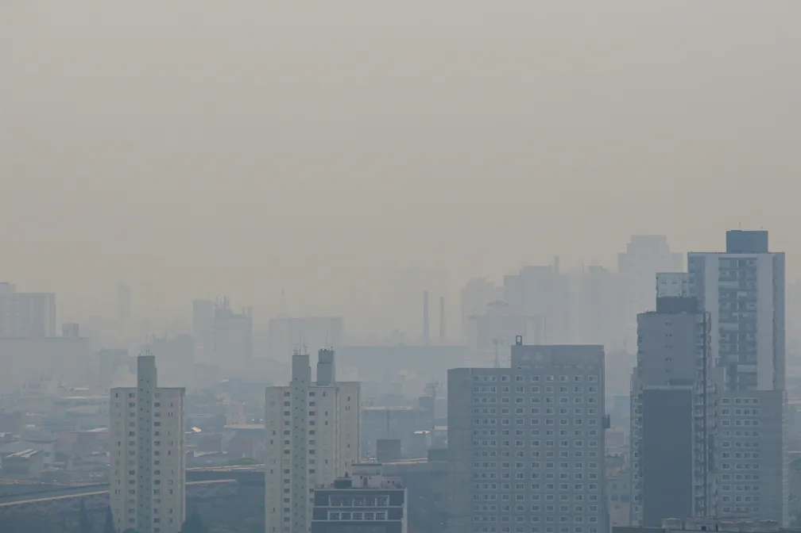

Entenda o que são 'plumas de fumaça', fenômeno que encobriu o céu no interior de SP
Tempo seco e ventos de pré-frontal favorecem propagação de incêndios que atingem todo o estado de São Paulo.
Por Marcelo Gaudio, g1 Campinas e Região
23/08/2024 18h17 Atualizado há 2 semanas

Foto: Divulgação/Qualifica SP
Um fenômeno atmosférico chamou a atenção dos moradores de Campinas (SP)
na tarde desta sexta-feira (23). De acordo com meteorologistas, focos de
incêndio que se propagam em todo o estado de São Paulo provocaram uma cortina
de fumaça que tomou os céus da metrópole.Essas grandes nuvens de fumaça são
provocadas por queimadas e podem se estender por milhares de quilômetros.
Elas são conhecidas como plumas de fumaça e são capazes até de encobrir o sol,
como ocorreu no meio da tarde.Para entender como o fenômeno ocorreu, o g1 Campinas
conversou com Bruno Bainy, meteorologista
Centro de Pesquisas Meteorológicas e Climáticas Aplicadas à Agricultura (Cepagri).
Segundo Bainy, é comum acontecer o evento nessa época do ano,
entre o final de agosto e setembro, por causa das condições de
baixa umidade relativa do ar.No entanto, a situação se intensificou
nesta sexta por causa de uma pré-frontal, quando os ventos do Noroeste
se alinham para Sudeste e ficam mais intensos.
 MENU
MENU